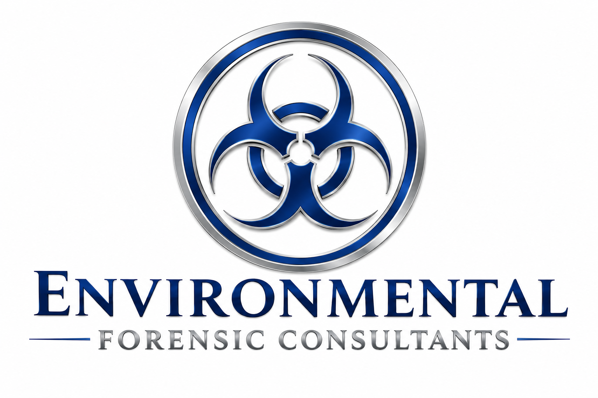

Professional Restoration & Environmental Consulting
Science-Based Industrial Hygiene, Workplace Exposure Assessments, and Environmental Health Consulting. Serving businesses, property owners, and organizations throughout Arizona.
Environmental Forensic Consultants, Inc. (EFCI) provides science-based industrial hygiene and environmental consulting services designed to help identify, evaluate, and address potential workplace and environmental health concerns.
Our team brings scientific expertise and practical field experience to environmental investigations, workplace assessments, indoor air quality concerns, and exposure evaluations.
From identifying potential environmental hazards to developing practical recommendations, EFCI works to help clients make informed decisions about workplace health, safety, and environmental conditions.
Evaluating workplace and environmental conditions through science-based investigations and assessments.
Evaluation of potential occupational exposures and workplace conditions to help identify health and safety concerns.
Investigation of indoor environmental conditions and potential air quality concerns in commercial, residential, and institutional environments.
Assessment of moisture-related concerns, microbial conditions, and potential indoor environmental impacts.
Environmental consulting services involving asbestos-related assessments and building environmental concerns.
Scientific evaluation of environmental conditions to help clients understand potential hazards and determine appropriate next steps.
Professional consultation regarding occupational health, workplace environmental conditions, exposure concerns, and risk evaluation.
Industrial hygiene requires an understanding of science, occupational health, environmental conditions, and practical solutions. EFCI combines advanced scientific education with professional field experience to provide clients with informed and defensible consulting services.
We focus on understanding the conditions, evaluating potential concerns, and helping clients determine appropriate actions based on the findings.
Experienced scientific professionals providing environmental and occupational health consulting.
Brandon leads EFCI's scientific and environmental consulting services, bringing advanced academic training and professional experience to industrial hygiene and environmental investigations.
Ryan contributes scientific and technical expertise to environmental investigations, industrial hygiene, and occupational health and safety consulting.
Environmental Forensic Consultants provides environmental and industrial hygiene consulting services in Phoenix, Scottsdale, Cave Creek, Glendale, Tempe, Mesa, and surrounding Arizona communities.
Contact our team to discuss your project and determine how our services may help address your environmental or workplace concerns.
Contact Environmental Forensic Consultants to discuss your industrial hygiene, workplace exposure, indoor air quality, or environmental consulting needs.
Contact EFCI